Aerospace workspaces, built for precision and control.
Aerospace and aviation facilities bring together highly specialised work environments, where every stage from research and assembly to testing and maintenance demands precision, control and repeatability. From ESD-sensitive electronics assembly to heavy-duty fabrication and tightly controlled cleanrooms, each space needs its…
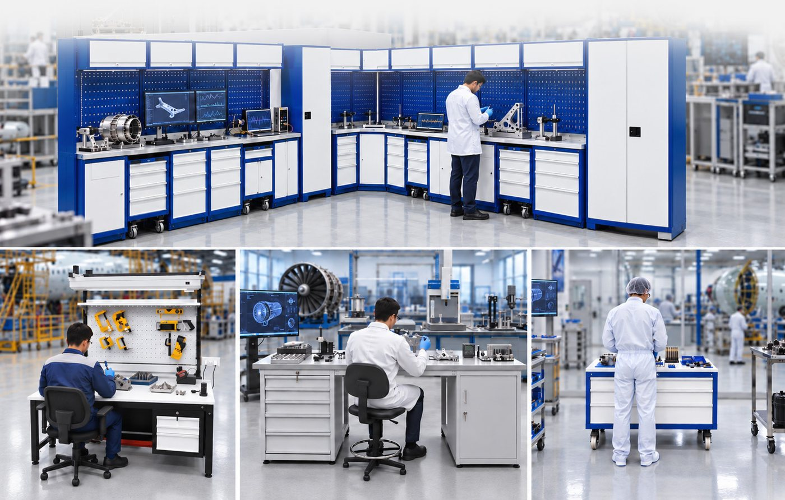
Sound familiar?
The everyday problems we hear most often from aerospace teams.
R&D & Prototyping Labs
Fixed workstations limit flexibility and slow changeovers.
Avionics & Electronics Assembly
ESD discharges can cause hidden component damage.
Precision Mechanical Assembly
Flex, vibration or instability can force the operator to compensate during precision work.
Structural Fabrication & Sub-assembly
Without proper work surfaces and storage, improvised setups can slow work and raise FOD risk.
11 application spaces. One configured system.
Choose a space to see the challenge, how we configure it and the systems involved.
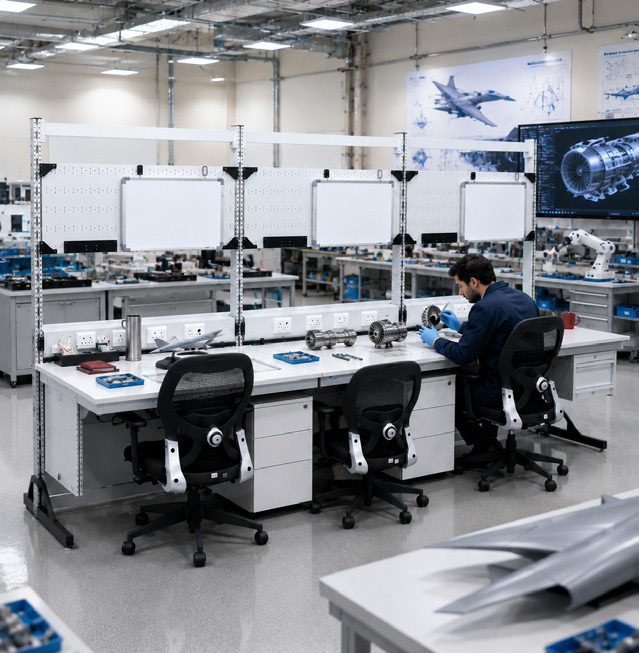
R&D & Prototyping Labs
R&D and prototyping labs are where new aerospace systems are conceived, assembled and validated before production. Requirements can change from one stage of development to the next, so the workspace must remain agile.
- Changeover BottlenecksFixed workstations limit flexibility and slow changeovers. Layouts struggle to adapt to changing requirements.
- Ergonomic StrainLong precision sessions can increase operator strain when the workstation is not configured around the task.
- Rebuild CostRebuilding the lab for every new programme consumes time and budget before testing begins.
- ESD & Material ControlElectronic prototypes and supporting components may require ESD control and organized storage.
- Modular & configurable worksystem
- ESD-safe lab workstations
- Chemical-resistant worktops
- Smart storage & cable management
- Mobile & adaptable benches
- Agile prototype workspace
- Protected sensitive assemblies
- Less rebuild dependency
- Ready for the next programme
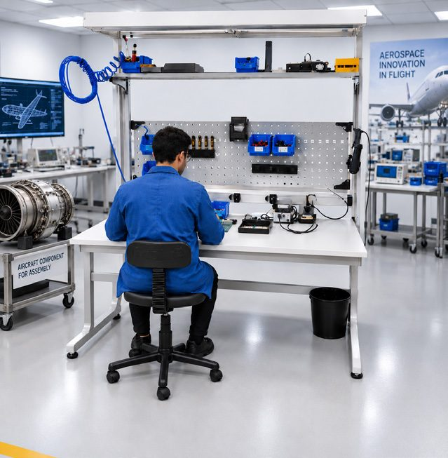
Avionics & Electronics Assembly
Avionics and electronics assembly zones handle LRUs, PCBs, wiring harnesses and other sensitive sub systems. Electrostatic protection must be built into the workspace from the start.
- Invisible DamageESD discharges can cause hidden component damage. Latent failures may appear only in service.
- Incomplete ESD ControlProtection must extend beyond the surface to grounding and the accessories used around the assembly.
- Component OrganizationSensitive assemblies, tools and small components need controlled, accessible locations.
- Operator InterfaceThe workstation should support the assembly sequence without introducing avoidable clutter.
- Application-configured ESD workstations
- ESD-safe worksurfaces
- Integrated grounding points
- ESD accessories
- Complete protected work area
- Grounded assembly environment
- Protection against hidden ESD risk
- Organized sensitive part handling
- Controlled assembly workspace
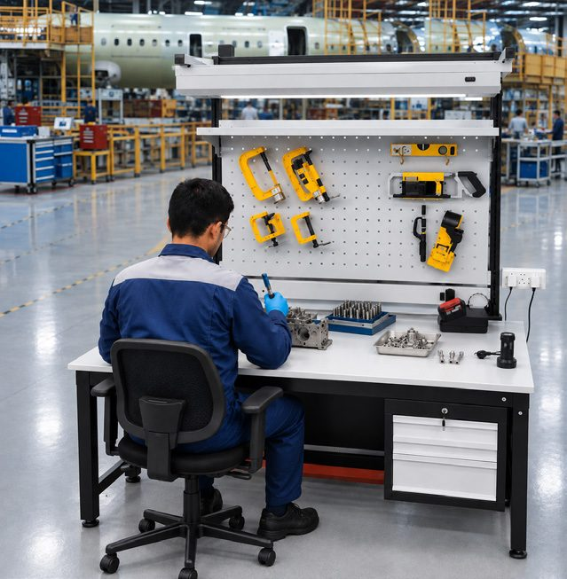
Precision Mechanical Assembly
Precision mechanical assembly areas bring together machined parts, alloys and composite structures that must fit and function accurately. The workspace must support delicate alignment as well as physically demanding assembly.
- Bench MovementFlex, vibration or instability can force the operator to compensate during precision work.
- Incorrect Working HeightPoor height or reach positioning can increase fatigue over long shifts.
- Tool & Part ClutterUncontrolled tools and small parts can interfere with accurate assembly.
- Repetitive WorkRepeated assembly tasks require a workspace that supports ergonomic operation.
- Robust assembly workbenches
- Application-selected worktops
- Adjustable tool holding
- Organized parts-bin rails
- Under-bench storage & clutter control
- Stable assembly station
- Better ergonomic support
- Cleaner build flow
- Accuracy and repeatability supported
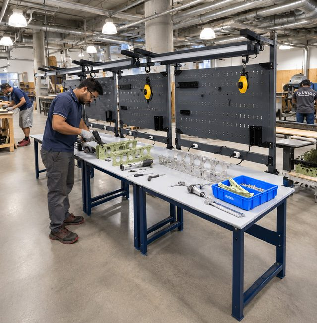
Structural Fabrication & Sub-assembly
Structural fabrication and sub-assembly zones handle large metal or composite parts such as fuselage sections, ribs, brackets and mounting frames. These are heavy-duty areas where tools, fixtures and parts need clear access.
- Improvised WorkspacesWithout proper work surfaces and storage, improvised setups can slow work and raise FOD risk.
- Heavy LoadsWork surfaces and storage must support demanding fabrication and sub-assembly tasks.
- Movement Between StagesLarge parts can be difficult to move safely between fabrication, fitting and inspection.
- Floor ClutterTools, fixtures and mobile equipment can obstruct movement when they lack defined locations.
- Rugged fabrication workbenches
- Mobile workstations durable worktops
- Lockable castors
- Base cabinets & Link trolleys
- Organized tools, clutter-free floors
- Heavy-duty fabrication support
- Accessible tooling
- Controlled movement between stages
- Clearer shop floor flow
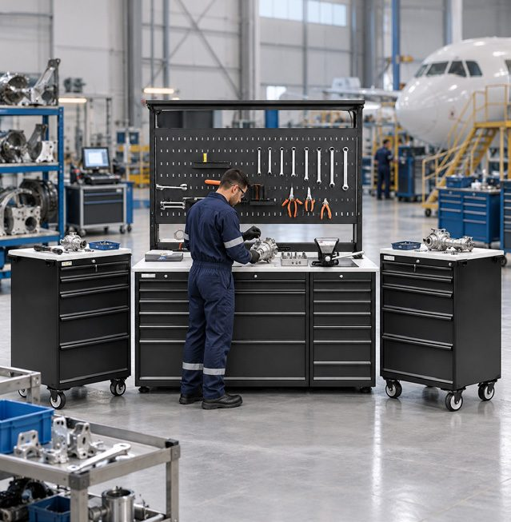
MRO (Maintenance, Repair & Overhaul) Bays
MRO bays are where aircraft are serviced, repaired and returned to service. Technicians work around aircraft, so the workspace has to move with the job.
- Reduced Wrench TimePoor layout and fixed benches increase unnecessary technician movement.
- Tool AccountabilityMissing or poorly controlled tools can create serious airworthiness risk.
- Line-Side MobilityTools and support equipment need to travel with the maintenance task.
- AuditabilityTool organization should make presence, storage and return easier to control.
- Rugged mobile maintenance workstations
- Tool trolleys & cabinets
- Foam-insert & shadow-board tool control
- Durable worktops & pegboard storage
- Organized, auditable maintenance flow
- Improved tool control
- Less wasted technician movement
- More auditable maintenance flow
- Workspace that moves with the job
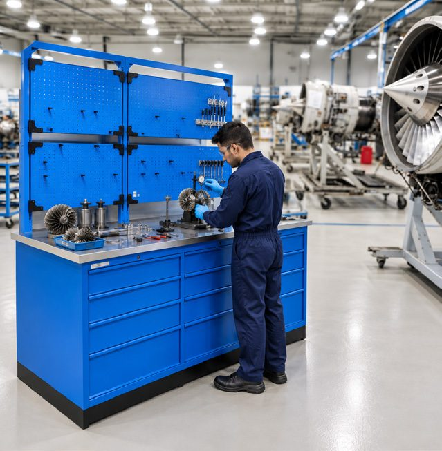
Engine Component Assembly
Engine component assembly areas are precision critical zones where turbine modules, compressor sections, shafts and related sub-systems are assembled. The work combines heavy handling with very fine build requirements.
- Weight Vs PrecisionThe workspace must handle demanding loads without compromising controlled assembly.
- Small-Part Mix-UpSeals, fasteners and other small parts need clear segregation and traceability.
- Specialized Tool StorageTorque tools and specialized equipment require controlled, accessible storage.
- Handling RiskPoor organization can increase injury risk and handling difficulty.
- Modular & configurable worksystem
- ESD-safe lab workstations
- Chemical-resistant worktops
- Smart storage & cable management
- Mobile & adaptable benches
- Controlled engine build flow
- Component traceability support
- Better small-part segregation
- Cleaner, safer handling
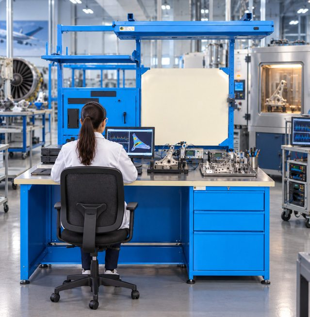
Environmental & Stress Testing Labs
Environmental and stress testing labs validate aerospace components under thermal, vibration, humidity, altitude and acoustic conditions. These zones combine test chambers, Instrumentation rigs and preparation areas.
- Changing Test ProgrammesQualification cycles can change the rigs, instruments and preparation requirements around the workspace.
- Fixed FurnitureFurniture that cannot adapt creates bottle necks between test programmes.
- Mixed RequirementsDifferent tests may require standard, chemical-resistant or ESD-safe worktops.
- Equipment SupportInstrumentation and preparation activities need organized, accessible support.
- Reconfigurable workstations
- Heavy-duty benches
- Mobile storage solutions
- Application-specific worktops
- Adaptable to changing programmes
- Easier programme changeovers
- Adaptable test support
- Application selected surfaces
- Less furniture driven bottleneck
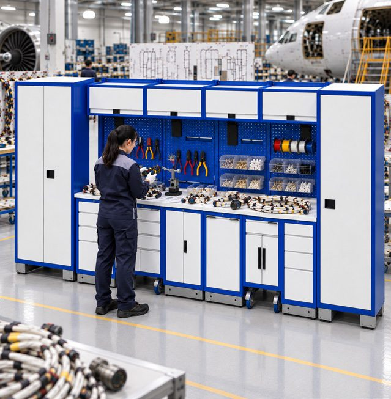
Crimping & Harness Build Area
Crimping and harness build areas are dedicated wiring assembly zones where aircraft harnesses are cut, stripped, crimped, inspected and tested. Many small parts must remain organized in sequence.
- Small-Part OrganizationConnectors, contacts and consumables need clearly defined locations.
- Sequence VisibilityThe workspace should support the order in which harness work is performed.
- Lighting ErrorsPoor lighting can contribute to colour identification errors and rework.
- ESD RequirementsElectronic signal harnesses may require ESD-safe surfaces and grounding.
- Configurable workbenches
- Overhead storage & bin rails
- Integrated pegboards & task lighting
- ESD-safe surfaces
- Grounding provisions
- Structured harness station
- Improved component visibility
- Better sequence control
- Reduced rework potential
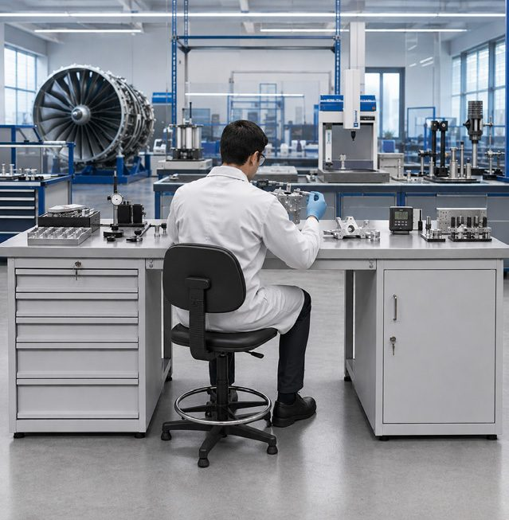
Quality Inspection, Calibration & Metrology
Inspection, calibration and metrology areas are controlled zones where parts and instruments are verified against defined standards. Accuracy here affects the trust placed in everything that passes through the facility.
- Instrument SegregationMixing calibrated and uncalibrated tools can create control problems.
- Bench StabilityAn unstable surface can undermine confidence in measurement conditions.
- TraceabilityInstruments and gauges need organized, identifiable storage.
- Audit ReadinessClean worktops, clear segregation and proper lighting support controlled inspection.
- Stable precision workstations
- Organized instrument & gauge storage
- Clear segregation
- Clean, well-lit worktops
- Audit-ready workspace
- Controlled inspection environment
- Accuracy supported by stable workspace
- Improved traceability
- Clearer audit readiness
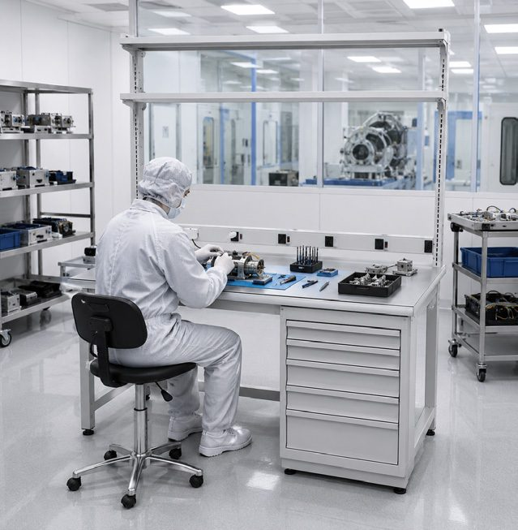
Cleanroom / Controlled Assembly Zones
Cleanroom and controlled assembly zones protect sensitive aerospace components from particulate, molecular and electrostatic contamination. Furniture in these spaces has to support the environment, not disrupt it.
- Particle GenerationConventional industrial furniture can shed particles or create difficult to clean areas.
- Dust TrapsPoorly considered surfaces and storage can trap contamination.
- Sensitive ComponentsOptics, sensors, avionics and precision assemblies can be compromised by contamination.
- ESD ControlControlled assembly involving electronics may require integrated ESD protection.
- Cleanroom-compatible workstations
- Smooth, easy-clean worktops
- Enclosed storage
- ESD-ready configurations
- Controlled-zone support
- Easy-clean workspace
- Controlled handling support
- Better contamination control
- ESD-ready where required
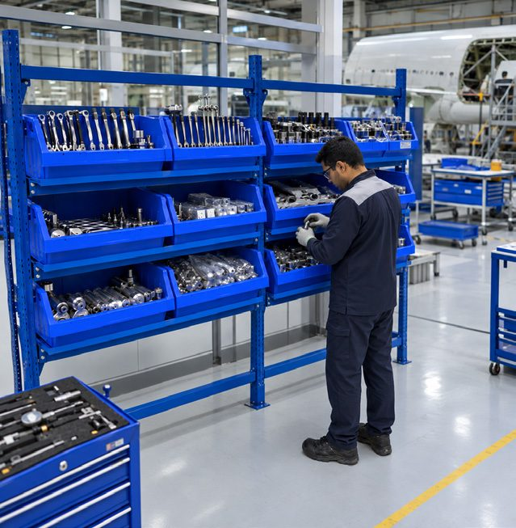
Tool Crib & Kitting Areas
Tool crib and kitting areas manage the flow of tools, parts and consumables across the facility. These zones are central to traceability, picking accuracy and on-time issue to the shop floor.
- Search TimeDisorganization increases the time technicians spend locating tools and parts.
- Incorrect KitsPoor picking control can result in incomplete or incorrect kits.
- Tool AccountabilityIssue and return need visible, disciplined control.
- FOD RiskUncontrolled tools and parts can create FOD concerns in maintenance environments.
- High-density tool crib storage
- Controlled issue counters
- Flow racks & mobile kitting trolleys
- Foam-insert & shadow-board tool control
- Easy tool visibility & accountability
- Faster issue and return
- Improved accountability
- Better picking control
- FOD prevention support
Fundamentals of workspace design.
- Precision
- Electrical protection
- Traceability
- Tool control
- Ergonomics
- Repeatability
- Adaptability
The Furnisys workspace ecosystem.
Work systems, storage systems and accessories designed to work as one.
Work systems

Stands & Trolleys
Configure stands and trolleys to securely hold or transport parts, tools, and test equipment—ideal for use across production, assembly, repair, and maintenance environments.

Overhead Cabinets Shelves and Mounting Components
Keep essential items within reach and your worktop organized with overhead storage solutions. Cabinets can be wall-mounted or fixed onto riser shelves, while adjustable…

Link Flow Racks
Experience efficient material handling with LINK Flow Racks—designed to streamline picking, sorting, and assembly processes.
Storage systems

Base Storage Cabinet
"Modular, high-capacity storage built to handle heavy loads" adapts to changing workspaces and demanding storage needs.

Mobile Cabinets
Designed for workflows that require tools and parts on the move, Furnisys mobile cabinets combine storage and mobility in one solution

Issue Counters
Furnisys issue counter cabinets offer organized, accessible storage for fast-moving items of various sizes—designed to keep your workspace efficient, clean, and ready…
Proof from real installations.

Workstation Systems for an Aerospace Manufacturer
Industry: Aerospace & Defense, Product & Parts Manufacturing Function: Research & Development Furnisys Program: Workstation Systems, Link Uprighter System, Storage &…

Kritsnam Case Study
Founded in 2015 in Kanpur, Kritsnam Technologies makes Artificial intelligence-backed solutions to manage water resources sustainably. With their product Dhaara, a…

An ESD-safe testing lab for medical equipment
Trusted by manufacturers, laboratories and institutions across industries. See our clientele
Frequently asked questions.
Can one system cover every aerospace space?
Yes. Work systems, storage systems and accessories share standard modules, so each space gets its own configuration within one consistent system.
Can the setup change as our operations grow?
Yes. Stations are built from standard parts, so you can add drawers, power, uprighters or bays, or relocate stations, without replacing what you already have.
Do you plan the layout before manufacturing?
For confirmed projects we carry out a site study and prepare 2D and 3D layouts and a proposal before anything is manufactured.
How we engage.
Share your brief
Scope, application spaces, timelines and any drawings.
Specialist discussion
A workspace specialist reviews the brief with your team.
Site study & layout
For confirmed projects: site study, 2D/3D layout and proposal.
Manufacture & install
Built in Navi Mumbai, installed and supported by our team.
Planning a new aerospace space?
Share your project brief. Every brief is reviewed by a workspace specialist who will contact you to discuss scope, layout and next steps.
Application-led design
Every station configured around the process, not a catalogue.
One accountable team
Design, manufacturing and installation from Navi Mumbai.
Built to scale
Standard modules that grow with your operation.
See our latest aerospace and aviation installations on LinkedIn
Follow Furnisys Aerospace & Aviation for new projects, application ideas and workspace insights from the aerospace and aviation industry.